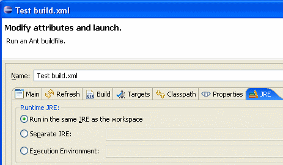

Ant task for Eclipse
In order to use it, select "Run As->Ant Build..." for the Buildfile
and choose the option "Run in the same JRE as the workspace"

If you generate new source code during the build, you may need to refresh the workspace using the following task:
<eclipse.refreshLocal
resource="${ant.project.name}"/>
Options
The JAutodoc task has the following options. Defaults are always taken from the current Workspace or Project specific settings.
| Attribute | Description | Required |
| srcdir | Location of the java files. | No; default is src |
| includes | Comma- or space-separated list of files (may be specified using wildcard patterns) that must be included; all .java files are included when omitted. | No; default is **/*.java |
| excludes | Comma- or space-separated list of files (may be specified using wildcard patterns) that must be excluded; no files (except default excludes) are excluded when omitted. | No |
| verbose | Log the files that are being processed. | No; default is false |
| mode | The mode to use:
|
No |
| public | Comment public members(true|false). |
No |
| package | Comment package members(true|false). |
No |
| protected | Comment protected members(true|false). |
No |
| private | Comment private members(true|false). |
No |
| types | Comment Types(true|false). |
No |
| fields | Comment Fields(true|false). |
No |
| methods | Comment Methods(true|false). |
No |
| getsetOnly | Comment Getter/Setter only(true|false). |
No |
| excludeGetset | Exclude Getter/Setter(true|false). |
No |
| todo | Add ToDo for auto-generated Javadoc(true|false). |
No |
| comment | Create comment from element name(true|false). |
No |
| single | Single line field comment(true|false). |
No |
| format | Use Eclipse comment formatter(true|false). |
No |
| getsetFromField | [G,S]etter from field comment(true|false). |
No |
| header | Add file header(true|false). |
No |
| replaceHeader | Replace existing header(true|false). |
No |
| multiHeader | Multi comment header(true|false). |
No |
| headerOnly | Add header only (No Javadoc created)(true|false). |
No |
Nestet Filesets are supported.
Examples
Comment all sources using the current Project/Workspace settings<jautodoc srcdir="src"
includes="**/*.java"/>
<jautodoc srcdir="src"
includes="**/*.java" headeronly="true"/>